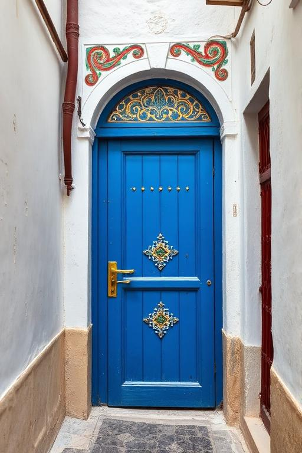

Plongez dans un voyage unique à travers la culture, le patrimoine, la gastronomie et les paysages méditerranéens de ce joyau de l'Afrique du Nord.
Une plateforme immersive pour explorer toutes les facettes de la Tunisie : ses régions, son histoire, ses saveurs et sa culture vivante.
Explorez chaque région de la Tunisie, de Tunis à Tataouine, en passant par Sousse, Sfax et Tozeur.
Découvrez les médinas classées, les sites archéologiques et les trésors historiques millénaires.
Savourez les saveurs du couscous, du brik, du lablabi et des pâtisseries traditionnelles.
Testez vos connaissances sur la Tunisie à travers un quiz interactif et amusant.
Située au nord de l'Afrique, la Tunisie est un pays riche d'une histoire millénaire, héritière des civilisations punique, romaine, arabe et ottomane. Avec ses 1 300 km de côtes méditerranéennes, ses déserts sahariens et ses montagnes verdoyantes, elle offre une diversité paysagère exceptionnelle.
